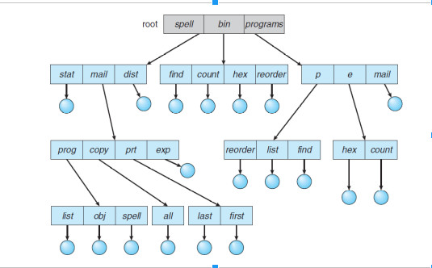

A tree is the most common directory structure. The tree has a root directory, and every file in the system has a unique path name. A directory (or subdirectory) contains a set of files or subdirectories. A directory is simply another file, but it is treated in a special way. All directories have the same internal format. One bit in each directory entry defines the entry as a file (0) or as a subdirectory (1). Special system calls are used to create and delete directories. In normal use, each process has a current directory. The current directory should contain most of the files that are of current interest to the process. When reference is made to a file, the current directory is searched. If a file is needed that is not in the current directory, then the user usually must either specify a path name or change the current directory to be the directory holding that file.
